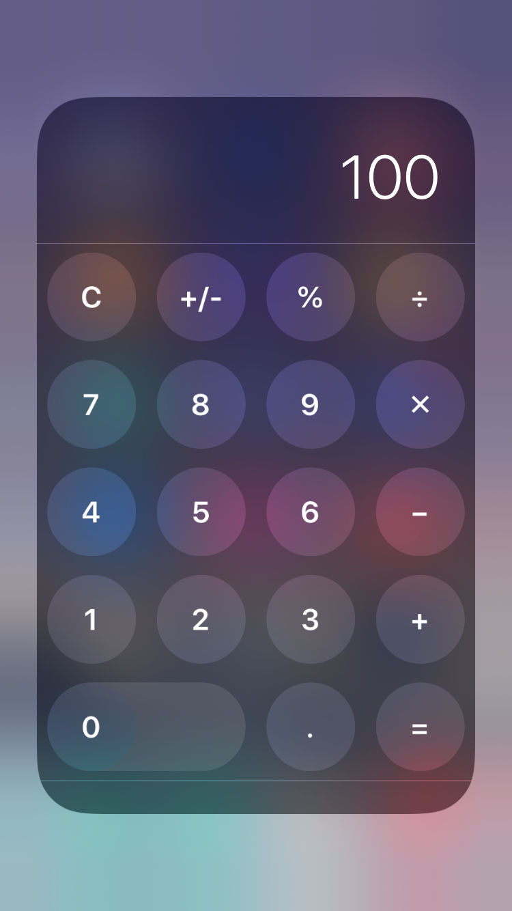

Portfolio
-
Scoutr

A lightweight python webserver that can turn any USB camera into a security camera.
Link -
CCCalc
An iOS modification that allows a small calculator to be used anywhere in the OS.
Link -
Freemote
An iOS modification that allows use of Twitch TV emotes on the Twitch iPhone app.
Link -
Skribbl.io-Client
A desktop client that interfaces with the online game Skribbl.io, allowing the game to be played outside of a browser.
Link